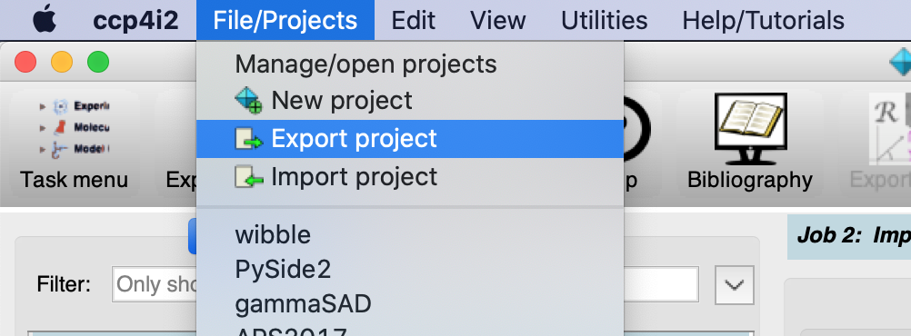

An entire project can be saved to a zip file by clicking "File/Projects" -> "Export project" on the main menu bar. The zip file can be loaded into CCP4i2 on another computer by clicking "File/Projects" -> "Import project"; this will recreate the project on the second computer.
